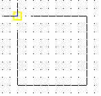
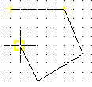
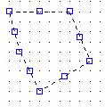

3. El primer dibujo en AutoCAD.
Vamos a iniciar nuestro primer trabajo en AutoCAD. Se compondrá de un sencillo dibujo a base de líneas.
1. Accede a Archivo - Cerrar para cerrar la ventana de dibujo actual.
2. A la pregunta de guardar los cambios contesta negativamente.
3. Accede a Archivo - Nuevo y acepta la ventana que aparece.
4. Asegúrate de que están activadas la rejilla y el forzado de coordenadas.
5. Pulsa el botón (línea) de la barra de herramientas de dibujo.
6. Pulsa un clic en cualquier parte de la pantalla para situar el punto inicial de la línea.
7. Dibuja un cuadrado hasta cerrarlo.
8. Para finalizar la orden de línea, pulsa la tecla ESC.
Habrás observado a medida que dibujabas, que AutoCAD iba señalando con una marca amarilla los puntos automáticamente. De momento vamos a centrarnos en la creación de los primeros dibujos y más adelante ya veremos para qué sirven este tipo de marcas.
Vamos a dibujar otra figura:
9. Inicia la orden LINEA, pero ahora escribiendo la palabra LINEA.
10. Dibuja cualquier forma, pero no la cierres:

11. Pulsa la letra C.
12. Pulsa Intro.
Observa cómo AutoCAD ha cerrado automáticamente la figura en su punto inicial.
Abrir un archivo
Es fácil. Entra en el menú Archivo y haz clic sobre la opción Abrir. Te aparecerá un cuadro de diálogo habitual en Windows, en el que sólo tendrás que buscar la carpeta en la que se encuentra el archivo que quieres abrir. Una vez localizado, haz clic sobre el botón Abrir, y lo tendrás al momento en tu pantalla.
Guardar un archivo
Es muy fácil. AutoCAD guarda los dibujos con la extensión
1. Accede a Archivo - Guardar
2. Selecciona la unidad y el nombre y acepta.
Repetir una orden
Muchas veces nos encontraremos ante la repetición de alguna orden. Para no volver a pulsar o escribir la última orden dada, podemos:
- Pulsar el botón derecho del ratón y elegir la opción Repetir.
- Pulsar la tecla Intro.
Deshacer comandos y acciones
Para deshacer la última acción podemos:
-
Pulsar el botón derecho y elegir la orden.
-
Escribir la letra H
-
Acceder a Edición - Deshacer
-
Pulsando el botón
Rehacer hace lo contrario, es decir, volvemos a la situación anterior a deshacer. Sólo funciona inmediatamente después de deshacer.
El menú contextual
El botón derecho del ratón permite acceder rápidamente a muchas opciones de la pantalla, y también a acciones que afectan a la orden que estamos utilizando en ese momento. 1. Inicia la orden LINEA y dibuja un primer punto en la pantalla.
2. Dibuja un segundo punto.
3. Pulsa ahora el botón derecho del ratón.
Las opciones que aparecen afectan a la orden Línea que estamos utilizando en ese mismo momento.
4. Elige la opción Deshacer del menú contextual.
5. Observa cómo se ha borrado sólo el último segmento.
6. Vuelve a pulsar el botón derecho y elige Intro.
Seleccionar elementos
En AutoCAD podemos seleccionar de diversas formas:
-
Haciendo clic sobre varios de los segmentos de alguna de las figuras que has dibujado:

- Usando una ventana de izquierda a derecha: todos los objetos que queden completamente dentro de la ventana serán seleccionados.
- Usando una ventana de derecha a izquierda: todos los objetos que toque la ventana (no importa que no estén por completo en su interior) serán seleccionados.